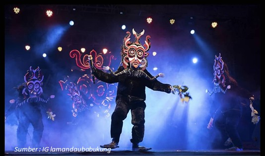

Tradisi Adat menjadi Festival Tahunan
 Di balik keindahan alam Desa Penyombaan, Kecamatan Delang, Kabupaten Lamandau, Kalimantan Tengah ini, tersembunyi kekayaan budaya Suku Dayak Tomun yang terus hidup hingga kini. Salah satunya adalah babukung, babukung adalah ritual tarian pada upacara kematian dalam agama Kaharingan yang dilaksanakan oleh beberapa rumpun suku Dayak, khususnya suku Dayak Tomun, Dayak Ngaju, Dayak Ut Danum dan suku Dayak lainnya yang masih menganut agama Kaharingan di Kalimantan Tengah, Indonesia. Tarian ini menggunakan topeng yang disebut Luha dengan karakter imajinasi maupun karakter hewan tertentu, sedangkan para penari disebut bukung. Tarian babukung dilakukan saat mengiringi upacara penguburan, bisa juga sebelum mayat dikubur, maupun saat ada upacara tiwah. Tarian bukung sendiri dilakukan dengan di iringi musik khas suku Dayak. Babukung yang merupakan produk seni asli nenek moyang yang ada di bumi Kalimantan Khususnya di Kabupaten Lamandau. Tarian ini mempunyai nilai historis bermuatan filosofis dan spiritual yang sangat tinggi. Pada tahun 2014 babukung telah resmi ditetapkan sebagai salah satu agenda rutin festival budaya oleh pemerintah Kabupaten Lamandau, yang kini dikenal dengan Festival Babukung.
Pada tahun 2024 babukung menjadi sorotan nasional, festival ini bukan hanya menjadi kebanggaan masyarakat lokal, tetapi juga telah menarik perhatian secara luas karena keunikannya yang menampilkan berbagai tarian topeng dari suku Dayak Tomun. Anggota Dewan Perwakilan Rakyat Daerah (DPRD) Kalimantan Tengah Sugiyanto, mengungkapkan kebanggaannya terhadap pencapaian festival babukung yang masuk dalam daftar 110 Karisma Event Nusantara (KEN) 2024. Daftar ini merupakan bagian dari upaya pemerintah dalam mempromosikan kekayaan budaya Indonesia di kancah nasional dan internasional. Festival babukung bukan hanya sekedar acara budaya, tetapi juga simbol pelestarian tradisi yang sudah berlangsung turun - temurun. Dengan masuknya festival ini kedalam Karisma Event Nusantara, kita berharap semakin banyak orang yang mengenal dan mengapresiasi kekayaan budaya Kalteng, khusunya Dayak Tomun yang ada di sana, "ujarnya, Senin (12/8/2024).